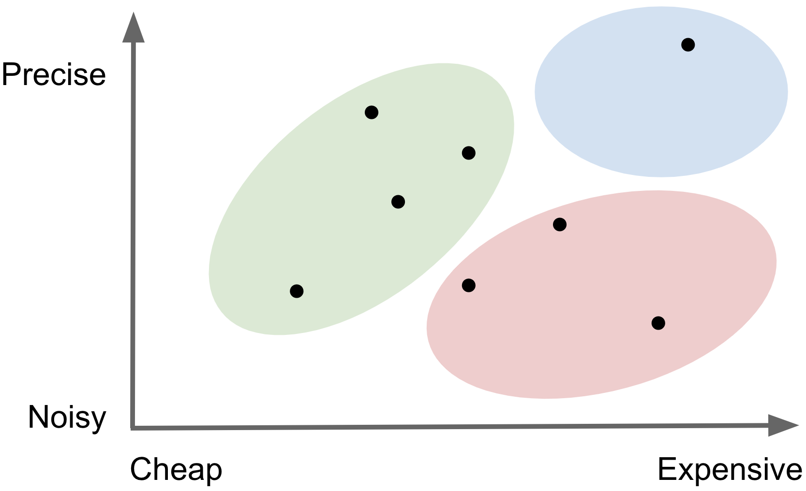
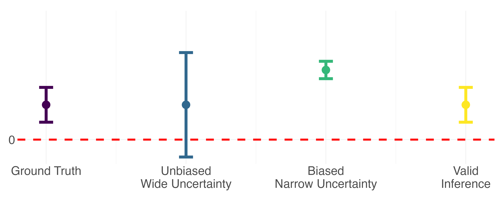
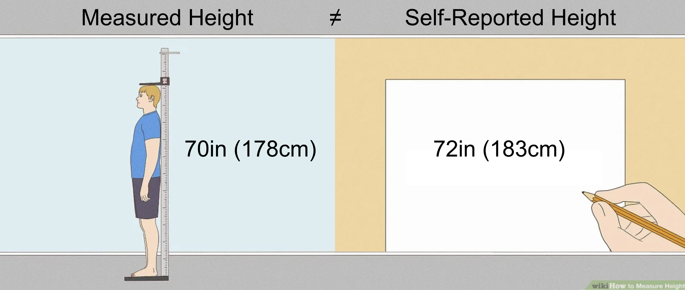

The problem: a researcher is interested in studying an outcome, Y, which is difficult to measure due to practical constraints such as
time or cost. But they do have access to relatively cheap predictions of Y. They hypothesize that Y is associated with X,
a set of features which are easier to measure. Their goal is to estimate a parameter of scientific interest, θ, which describes the
relationship between X and Y. How can the researcher attain valid estimates of θ relying upon mostly predicted outcomes of Y?
Regression we want isExpensivebutPrecise → Y = θ1 X Regression we have isCheaperbutNoisier → Ŷ = θ2 X Importantly,θ1is not the same asθ2!
In machine learning, "predicted data" are often thought of as the outputs from
a complicated algorithm. I opt for an even broader definition:any
measure of a conceptual variable where a better, more direct measure exists.This definition includes predictions from black-box AI models like chatGPT, but also includes other
data we rely upon as social scientists, like survey responses, interviews, imputations, statistical estimates, derived measures,
and a whole host of other proxies. Below is a table with some examples I have come across in my own research.
Every conceptual variable comes with different measurement challenges, but in general, more precise
measurements are also more expensive to collect. A stylized image below shows thatexpensive and preciseground truth measures tend to live in the light blue region, with predicted data everywhere else. Because of this cost-quality tradeoff,
we often resort to working with predicted data in practice. But not all predicted data
are created equally! The best are those depicted in the green region - relativelyprecise and cheapcompared
to the red region -noisy and expensive.
Measurements vary in both cost and precision
Variable
Ground Truth
Predicted
Cause of Death
Vital Registration
Verbal Autopsy
Obesity
Fat Percentage
BMI
Income
Admin Data
Self Reported
Environmental Attitude
Questionnaire
NLP Sentiment

What does it mean for inference on predicted data to be invalid?
In this context, valid statistical inference refers to bothun-biased point estimatesandprecise uncertainty bounds. Relative to inference performed with "ground truth"
outcomes, inference on predicted data may have biased point estimates due to systematic
differences between predictions and the ground truth, and the reported uncertainty will be
deceivingly narrow because it doesn't account for any of the prediction error.
Why does this matter?Consider a very simple hypothesis test where the p-value tells us whether
or not an observed relationship between X and y is statistically significant. This conclusion is
a function of both the point estimate and the uncertainty around that point estimate. The stylized
diagram below demonstrates how bias and conservative uncertainty might lead to very different
scientific conclusions.
Inference can have bias and/or misleading uncertainty

So how do you perform valid inference on predicted data?
There are several existing methods for performing the bias correction for valid inference
with predicted data. While the technical details differ, these methods are built upon the same intuition.
At its simplest, you incorporate what you learn when you have access to both ground truth and predicted
outcomes into downstream inference where you rely solely on predicted outcomes.
The two step procedure looks like this:
Using side-by-side ground truth and predicted measures of the outcome variable, estimate
the IPD rectifier, Δ. This tells you how differences between Y and Ŷ are
associated with covariates X for the same observation.
(Yi - Ŷi) = ΔXi
Now, when you perform inference with predicted outcomes in the absence of ground truth
measured outcomes, you incorporate the rectifier Δ into the naive parameters you estimate to
recover valid IPD estimates.
Invalid IPD → Ŷ2 = θX2
Correct IPD → Ŷ2 = (θ+Δ;)X2
Cartoon example: height and basketball ability
We are interested in the association between a person's height and an index of their
basketball ability on a scale from 1-10. Height can be measured directly,
or from a self-report. Some people might report correctly,
others might not, so we consider the self-reported heightpredicteddata
relative to directly measured height asground truthdata.

Oops! It looks like some people report being a couple inches taller than they actually are...
How does this affect our conclusion about the association between height and basketball ability when
we are relying on mostly self-reported height outcomes? Let's see. This is what it looks like to learn therectifier Δfrom the labeled data to correct inference performed on the
unlabeled data.
IPD References
(in reverse order of publication date)
Methods for correcting inference based on outcomes predicted by machine learning.(PostPI) Wang, McCormick and Leek. 2020 PNAS.
Prediction-powered inference.(PPI) Angelopoulos, Bates, Fannjiang, Jordan and Zrnic. 2023a Science.
PPI++: Efficient Prediction-Powered Inference.(PPI++) Angelopoulos, Duchi and Zrnic. 2023b arxiv.
Assumption-Lean and Data-Adaptive Post-Prediction Inference.(PSPA) Miao, Miao, Wu, Zhao and Lu. 2023 arxiv.
Do We Really Even Need Data? 🦏 Hoffman, Salerno, Afiaz, Leek and McCormick. 2024 arxiv.
From Narratives to Numbers: Valid Inference Using Language Model Predictions from Verbal Autopsies(multiPPI++) Fan, Visokay, Hoffman, Salerno, Liu, Leek and McCormick. 2024 COLM.
Code respository for the `ipd` package can be foundhere.